9. Spatial Gillespie Method¶
9.1. Spaces in E-Cell4¶
What the space in E-Cell4 looks like?
from ecell4 import *
w1 = ode.ODEWorld(Real3(1, 1, 1))
w2 = gillespie.GillespieWorld(Real3(1, 1, 1))
We created a cube size, 1, on a side for ODEWorld and
GillespieWorld. In this case the volume only matters, that is
w3 = ode.ODEWorld(Real3(2, 0.5, 1)) # is almost equivalent to 'w1'
w4 = gillespie.GillespieWorld(Real3(2, 2, 0.25)) # is almost equivalent to 'w2'
This returns the same results. Because the volume is same as 1.
This seems reasonable in homogeneous system, but the cell is NOT homogeneous. So we need to consider a space for molecular localization.
You can use several types of space and simulation methods in E-Cell4. We show an example with spatial Gillespie method here.
9.2. Spatial Gillespie Method¶
In E-Cell4, the Spatial Gillespie method is included in meso module.
Let’s start with run_simulation like ode.
%matplotlib inline
import numpy
from ecell4 import *
with reaction_rules():
A + B == C | (0.01, 0.3)
y = run_simulation(numpy.linspace(0, 10, 100), {'C': 60}, solver='meso')
/Users/knishida/Library/Python/2.7/lib/python/site-packages/matplotlib/font_manager.py:273: UserWarning: Matplotlib is building the font cache using fc-list. This may take a moment.
warnings.warn('Matplotlib is building the font cache using fc-list. This may take a moment.')
At the steady state, the number of C is given as follows:
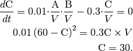
You will obtain almost the same result with ode or gillespie
(may take longer time than ode or gillespie). This is not
surprising because meso module is almost same with Gillespie unless
you give additional spatial parameter.
Next we will decompose run_simulation.
from ecell4 import *
with reaction_rules():
A + B == C | (0.01, 0.3)
m = get_model()
w = meso.MesoscopicWorld(Real3(1, 1, 1), Integer3(1, 1, 1)) # XXX: Point2
w.bind_to(m) # XXX: Point1
w.add_molecules(Species('C'), 60)
sim = meso.MesoscopicSimulator(w) # XXX: Point1
obs = FixedIntervalNumberObserver(0.1, ('A', 'B', 'C'))
sim.run(10, obs)
viz.plot_number_observer(obs)
This is nothing out of the ordinary one except for MesoscopicWorld
and MesoscopicSimulator, but you can see some new elements.
First in w.bind_to(m) we asscociated a Model to the World.
In the basic exercises before, we did NOT do this. In spatial methods,
Species attributes are necessary. Do not forget to call this. After
that, only the World is required to create a
MesoscopicSimulator.
Next, the important difference is the second argument for
MesoscopicWorld, i.e. Integer3(1, 1, 1). ODEWorld and
GillespieWorld do NOT have this second argument. Before we explain
this, let’s change this argument and run the simulation again.
from ecell4 import *
with reaction_rules():
A + B == C | (0.01, 0.3)
m = get_model()
w = meso.MesoscopicWorld(Real3(1, 1, 1), Integer3(4, 4, 4)) # XXX: Point2
w.bind_to(m) # XXX: Point1
w.add_molecules(Species('C'), 60)
sim = meso.MesoscopicSimulator(w) # XXX: Point1
obs = FixedIntervalNumberObserver(0.1, ('A', 'B', 'C'))
sim.run(10, obs)
viz.plot_number_observer(obs)
Integer3, you will have more different one.meso is almost same with gillespie, but meso divides the
space into cuboids (we call these cuboids subvolumes) and each
subvolume has different molecular concentration by contrast
gillespie has only one uniform closed space. So in the preceding
example, we divided 1 cube with sides 1 into 64 (4x4x4)
cubes with sides 0.25. We threw 60 C molecules into the
World. Thus, each subvolume has 1 species at most.9.3. Defining Molecular Diffusion Coefficient¶
Where the difference is coming from? This is because we do NOT consider
molecular diffusion coefficient, although we got a space with meso.
To setup diffusion coefficient, use Species attribute 'D' in the
way described before (2. How to Build a
Model). As shown in 1.
Brief Tour of E-Cell4
Simulations,
we use E-Cell4 special notation here.
with species_attributes():
A | {'D': '1'}
B | {'D': '1'}
C | {'D': '1'}
# A | B | C | {'D': '1'} # means the same as above
get_model()
<ecell4.core.NetworkModel at 0x10cddd2d0>
You can setup diffusion coefficient with with species_attributes():
statement. Here we set all the diffusion coefficient as 1. Let’s
simulate this model again. Now you must have the almost same result with
gillespie even with large Integer3 value (the simulation will
takes much longer than gillespie).
How did the molecular diffusion work for the problem? Think about free
diffusion (the diffusion coefficient of a Species is  ) in 3D
space. The unit of diffusion coefficient is the square of length divided
by time like 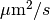 or 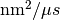.
) in 3D
space. The unit of diffusion coefficient is the square of length divided
by time like 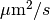 or 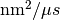.
It is known that the average of the square of point distance from time
to  is equal to 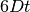. Conversely the average
of the time scale in a space with length scale
is equal to 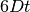. Conversely the average
of the time scale in a space with length scale  is about
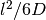.
is about
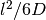.
In the above case, the size of each subvolume is 0.25 and the diffusion
coefficient is 1. Thus the time scale is about 0.01 sec. If the
molecules of the Species A and B are in the same subvolume,
it takes about 1.5 sec to react, so in most cases the diffusion is
faster than the reaction and the molecules move to other subvolume even
dissociated in the same subvolume. The smaller , the smaller
subvolume’s volume 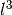, so the reaction rate after dissociation
is faster, and the time of the diffusion and the transition between the
subvolume gets smaller too.
9.4. Molecular localization¶
We have used add_molecules function to add molecules to World in
the same manner as ode or gillespie. Meanwhile in
MesoscopicWorld, you can put in molecules according to the spatial
presentation.
from ecell4 import *
w = meso.MesoscopicWorld(Real3(1, 1, 1), Integer3(3, 3, 3))
w.add_molecules(Species('A'), 120)
w.add_molecules(Species('B'), 120, Integer3(1, 1, 1))
In MesoscopicWorld, you can set the subvolume and the molecule
locations by giving the third argument Integer3 to
add_molecules. In the above example, the molecule type A spreads
all over the space, but the molecule type B only locates in a
subvolume at the center of the volume. To check this, use
num_molecules function with a coordinate.
print(w.num_molecules(Species('B'))) # must print 120
print(w.num_molecules(Species('B'), Integer3(0, 0, 0))) # must print 0
print(w.num_molecules(Species('B'), Integer3(1, 1, 1))) # must print 120
120
0
120
Furthermore, if you have IPython Notebook environment, you can visualize
the molecular localization with ecell4.viz module.
# viz.plot_world(w, radius=0.01)
viz.plot_world(w, interactive=False)
viz.plot_world function visualize the location of the molecules in
IPython Notebook cell by giving the World. You can set the molecule
size with radius. Now you can set the molecular localization to the
World, next let’s simulate this. In the above example, we set the
diffusion coefficient 1 and the World side 1, so 10 seconds is enough to
stir this. After the simulation, check the result with calling
viz.plot_world again.
9.5. Molecular initial location and the reaction¶
This is an extreme example to check how the molecular localization affects the reaction.
%matplotlib inline
from ecell4 import *
with species_attributes():
A | B | C | {'D': '1'}
with reaction_rules():
A + B > C | 0.01
m = get_model()
w = meso.MesoscopicWorld(Real3(10, 1, 1), Integer3(10, 1, 1))
w.bind_to(m)
This model consists only of a simple binding reaction. The World is
a long x axis cuboid, and molecules are located off-center.
w.add_molecules(Species('A'), 1200, Integer3(2, 0, 0))
w.add_molecules(Species('B'), 1200, Integer3(7, 0, 0))
# viz.plot_world(w, radius=0.025)
viz.plot_world(w, interactive=False)
On a different note, there is a reason not to set Integer3(0, 0, 0)
or Integer3(9, 0, 0). In E-Cell4, basically we adopt periodic
boundary condition for everything. So the forementioned two subvolumes
are actually adjoining.
After realizing the location expected, simulate it with
MesoscopicSimulator.
sim = meso.MesoscopicSimulator(w)
obs1 = NumberObserver(('A', 'B', 'C')) # XXX: saves the numbers after every steps
sim.run(5, obs1)
viz.plot_number_observer(obs1)
# viz.plot_world(w, radius=0.025)
viz.plot_world(w, interactive=False)
To check the effect of initial coordinates, we recommend that you locate
the molecules homogeneously with meso or simulate with
gillespie.
w = meso.MesoscopicWorld(Real3(10, 1, 1), Integer3(10, 1, 1))
w.bind_to(m)
w.add_molecules(Species('A'), 1200)
w.add_molecules(Species('B'), 1200)
sim = meso.MesoscopicSimulator(w)
obs2 = NumberObserver(('A', 'B', 'C')) # XXX: saves the numbers after every steps
sim.run(5, obs2)
viz.plot_number_observer(obs1, "-", obs2, "--")
The solid line is biased case, and the dash line is non-biased. The
biased reaction is obviously slow. And you may notice that the shape of
time-series is also different between the solid and dash lines. This is
because it takes some time for the molecule A and B to collide
due to the initial separation. Actually it takes
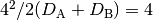 seconds to move the initial
distance between A and B (about 4).